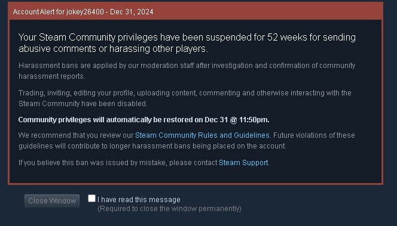

Gaming
Anything gaming.
Computer Setup Specs
- Keyboard: Logitech G PRO, RGB, Tenkeyless
- Cooling Fans: DARKROCK 3-Pack, 120mm, Low Noise
- Power Supply: Corsair RM750e, 80 Plus Gold, Modular
- Case: CORSAIR 4000D AIRFLOW, ATX, Tempered Glass
- Motherboard: MSI B550 Gaming GEN3, AM4, DDR4
- RAM: Corsair VENGEANCE LPX, 32GB (2x16GB), 3600MHz
- CPU Cooler: Thermalright Peerless Assassin 120 SE
- Processor: AMD Ryzen 7 5800X, 8-core
- Mouse: Logitech G600 MMO
End of an Era
After many years of playing Counter-Strike and dedicating over 3,000 hours to the craft, I have decided to move on. Recently, I have been subjected to a 52-week ban, and I will not be returning to the game. This marks the final chapter of my Counter-Strike journey as I move forward with my life.
It is disheartening to witness how Steam, with its lack of transparency and accountability, has contributed to the game's decline. Everything wrong with Counter-Strike stems from their mismanagement, which has ruined what was once an incredible gaming experience.
Despite the challenges, I have had many beautiful memories from gaming. From playing with my high school friends to meeting my best friends with whom I have formed lifelong connections, gaming has been a significant part of my journey. I have met acquaintances, experienced the good and the bad, and all of it has shaped me into who I am today. Gaming has been fun, but it is time to move on. It is a bittersweet feeling as the game holds a dear place in my heart.
Here is the game that got me banned: Watch the Video
Under no circumstances should I get banned
